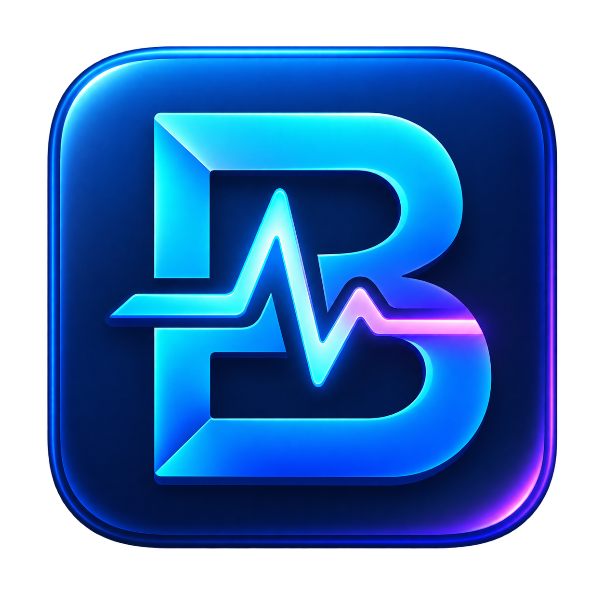

Живой обзор
CPU, GPU, оперативная память, диски, сеть, активная игра и процессы. Переставляй карточки так, как удобно тебе.
ТемператураЧастотаГрафики

Burmalk Скачать 1.1.7Burmalk показывает нагрузку, температуру, память и сеть на одной панели. В игре помогает следить за FPS через оверлей RTSS.
Версия 1.1.7 · Windows x64 · установщик включает .NET
Быстро оцени состояние ПК на главной панели, а за подробностями переходи в отдельные разделы.
CPU, GPU, оперативная память, диски, сеть, активная игра и процессы. Переставляй карточки так, как удобно тебе.
FPS, средний FPS и доступные датчики поверх совместимых игр через RTSS. Включение горячей клавишей F8.
Несколько цветовых тем, аниме-фон или собственное фото. Полупрозрачные карточки сохраняют читаемость.
Текущий трек Spotify или приложения SoundCloud, когда оно передаёт сведения о воспроизведении в Windows.
Игровые сеансы, сведения об оборудовании и ручной бенчмарк CPU, памяти и дискового файла.
Программа работает локально на твоём компьютере. Для основной панели аккаунт не нужен.
Открой установщик Burmalk для Windows x64.
Установка добавит ярлык на рабочий стол и в меню «Пуск».
Выбери тему и расположение карточек. Для игрового оверлея установи RTSS.
Для установки и обычного мониторинга — нет. Показатели считываются на самом компьютере.
Установи RTSS, запусти игру и нажми F8. Совместимость зависит от игры и её защиты.
Для аппаратного датчика может понадобиться подписанный PawnIO и разрешение администратора. Burmalk подскажет действие в разделе CPU.
Темы, собственный фон и порядок карточек сохраняются на компьютере между запусками.
Windows 10 версии 2004 и новее или Windows 11 · x64